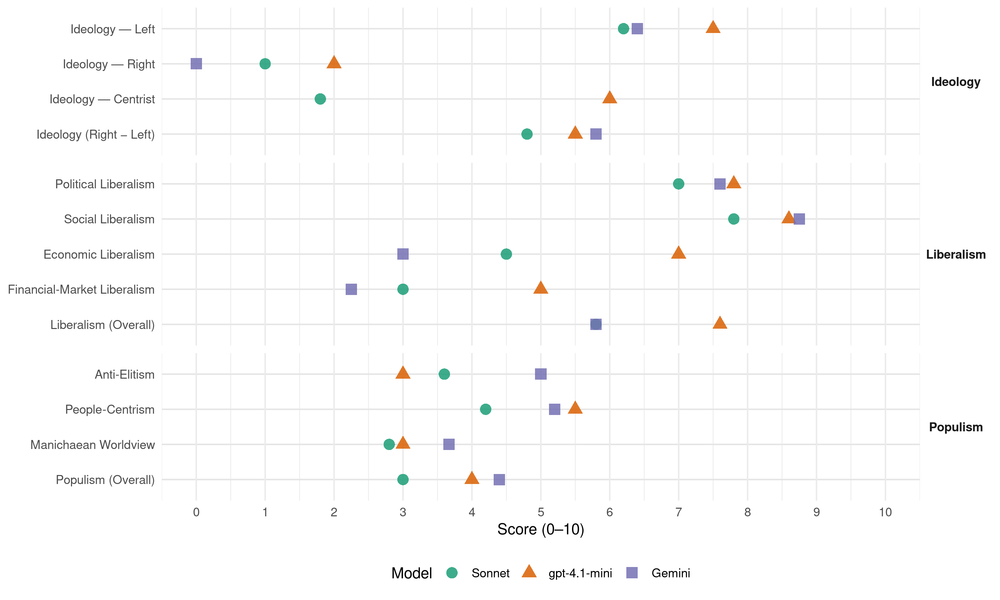

(Spain, 2019)
manifesto_id 33914_201911
Get full text: This site shows derived annotations and short verbatim quotes only. The full manifesto text is © Manifesto Project / WZB — obtain it via manifesto-project.wzb.eu using the manifesto_id above.
Headline scores
| Dimension | Sonnet | gpt-4.1-mini | Gemini |
|---|---|---|---|
| Populism (Overall) | 3.0 | 4.0 | 4.4 |
| Anti-Elitism | 3.6 | 3.0 | 5.0 |
| People-Centrism | 4.2 | 5.5 | 5.2 |
| Manichaean Worldview | 2.8 | 3.0 | 3.7 |
| Ideology (Right − Left) | 4.8 | 5.5 | 5.8 |
| Liberalism (Overall) | 5.8 | 7.6 | 5.8 |
| Political Liberalism | 7.0 | 7.8 | 7.6 |
| Social Liberalism | 7.8 | 8.6 | 8.8 |
| Economic Liberalism | 4.5 | 7.0 | 3.0 |
| Financial-Market Liberalism | 3.0 | 5.0 | 2.2 |
Evidence per dimension
Economic Liberalism
Gemini · score 3.0 · verified · chunk 1
“remunicipalitzar les xarxes de distribució”
En el context de reforma del sector elèctric, remunicipalitzar les xarxes de distribució dels municipis
Gemini · score 4.0 · mixed · chunk 2
“suport especial a les pimes i micro-empreses”
Apostem per un suport especial a les pimes i micro-empreses, per la seua importància
Gemini · score 3.0 · verified · chunk 3
“control sobre la producció i els preus”
Establiment d’una política del medicament que contemple el control sobre la producció i els preus dels medicaments.
Gemini · score 3.0 · verified · chunk 4
“regular els preus màxims de lloguer”
Capacitat de les comunitats autònomes i dels ajuntaments per regular els preus màxims de lloguer en zones urbanes saturades.
Gemini · score 3.0 · verified · chunk 5
“ingerències pernicioses del neoliberalisme”
rendició de comptes i la participació ciutadana i mai des de l’intervencionisme exterior i les ingerències pernicioses del neoliberalisme.
gpt-4.1-mini · score 7.0 · verified · chunk 1
“fomentar la innovació sostenible”
A més a més, el nostre Acord Verd es compromet a esforçar-se per corregir els excessos de les polítiques d’austeritat, i posar en igualtat de condicions els objectius socials i ambientals mentre impulsa la Transició Ecològica Justa. Emergència Climàtica Emergència Climàtica L’emergència climàtica és el repte més gran al qual haurem de fer front com a societat en les pròximes dècades. És urgent la necessitat de reduir les emissions de gasos d’efecte hivernacle per evitar escenaris de canvi climàtic catastròfic. Hem d’actuar en una doble via: anar cap a una producció i consum més responsable amb el medi ambient i desenvolupar estratègies de benestar encarades a reduir el consum de recursos naturals i d’energia, conservar i recuperar els espais forestals, fluvials i agraris i la seua biodiversitat, així com a la distribució justa dels costos i beneficis d’aquesta transició ecològica necessària i inajornable. En aquest sentit és clau l’alineament d’energia, clima i polítiques ambientals amb l’objectiu d’accelerar la transició a una economia sostenible, circular i competitiva.
gpt-4.1-mini · score 7.0 · verified · chunk 2
“Apostem per un suport especial a les pimes i micro-empreses, per la seua importància en la disminució de l’atur”
…Apostem per un suport especial a les pimes i micro-empreses, per la seua importància en la disminució de l’atur. Facilitar l’accés al crèdit de les xicotetes empreses que siguen econòmicament viables…
gpt-4.1-mini · score 7.0 · verified · chunk 3
“Promoció de la dotació d’una partida protegida i negociada que comprometi la màxima estabilitat”
…1.Promoció de la dotació d’una partida protegida i negociada que comprometi la màxima estabilitat en el temps en els àmbits autonòmics i estatals. 2.Establiment d’un marc financer sostingut i suficient…
gpt-4.1-mini · score 7.0 · verified · chunk 5
“compra pública ètica, el comerç just i el consum responsable a través d’un programa de política coherent”
Adopció de la compra pública ètica, el comerç just i el consum responsable a través d’un programa de política coherent i integral per a generar una cultura d’economia social i solidària, situant les persones en el centre del model econòmic.
Sonnet · score 5.0 · mixed · chunk 1
“incentius fiscals per a les empreses”
Establiment d’incentius fiscals per a les empreses que realitzen l’avaluació ambiental contínua (amb indicadors de millora) per augmentar la competitivitat de les empreses
Sonnet · score 5.0 · mixed · chunk 2
“facilitats administratives a la creació de noves empreses”
Donar facilitats administratives a la creació de noves empreses: generalització de la finestreta única
Sonnet · score 4.0 · verified · chunk 3
“Derogar les reformes laborals impulsades pel Partit Socialista i Partit Popular”
1.Derogar les reformes laborals impulsades pel Partit Socialista i Partit Popular als anys 2010 i 2012 respectivament, i promoure una nova proposta que es base en una planificació a llarg termini
Sonnet · score 4.0 · mixed · chunk 4
“Establiment de mecanismes per lluitar contra el dúmping fiscal”
5.Establiment de mecanismes per lluitar contra el dúmping fiscal. Garantir una harmonització tributària entre els habitants d’una comunitat respecte d’una altra.
Sonnet · score 5.0 · verified · chunk 5
“economia social i solidària, situant les persones en el centre”
per a generar una cultura d’economia social i solidària, situant les persones en el centre del model econòmic.
Financial-Market Liberalism
Gemini · score 3.0 · verified · chunk 2
“Creació d’una Banca Pública”
experiències d’economia social i treball associat 4.Creació d’una Banca Pública que puga cobrir el buit
Gemini · score 2.0 · verified · chunk 3
“banca pública atorgarà fons i microcrèdits”
La banca pública atorgarà fons i microcrèdits a molt baixos tipus d’interés per a projectes econòmics
Gemini · score 2.0 · verified · chunk 4
“impulsant la imposició de taxes a les transaccions financeres”
introduint criteris de responsabilitat social, impulsant la imposició de taxes a les transaccions financeres, la lluita contra el frau fiscal
Gemini · score 2.0 · verified · chunk 5
“imposició de taxes a les transaccions financeres”
Finances ètiques en l’acció de les administracions públiques introduint criteris de responsabilitat social, impulsant la imposició de taxes a les transaccions financeres, la lluita contra el frau fiscal
gpt-4.1-mini · score 5.0 · verified · chunk 2
“Suport institucional a les activitats desplegades per la Banca Ètica”
…Per una banca al servei de la societat 1.Recuperar el rescat bancari. 2.Suport institucional a les activitats desplegades per la Banca Ètica. 3.Els bancs hauran d’estar obligats a tenir un coeficient de suport creditici…
gpt-4.1-mini · score 5.0 · verified · chunk 5
“Finances ètiques en l’acció de les administracions públiques introduint criteris de responsabilitat social”
Finances ètiques en l’acció de les administracions públiques introduint criteris de responsabilitat social, impulsant la imposició de taxes a les transaccions financeres, la lluita contra el frau fiscal i l’eliminació dels paradisos fiscals.
Sonnet · score 3.0 · verified · chunk 1
“Garantir als inversors un marc legislatiu d’estabilitat”
Garantir als inversors un marc legislatiu d’estabilitat i àgil en els procediments administratius
Sonnet · score 3.0 · verified · chunk 2
“Creació d’una Banca Pública”
Creació d’una Banca Pública que puga cobrir el buit social propiciat per les caixes d’estalvi
Sonnet · score 3.0 · verified · chunk 3
“Fi dels avantatges socials de les SOCIMI”
11.Fi dels avantatges socials de les SOCIMI (Societats Anònimes Cotitzades d’Inversió en el Mercat Immobiliari).
Sonnet · score 3.0 · verified · chunk 4
“impulsant la imposició de taxes a les transaccions financeres”
Finances ètiques en l’acció de les administracions públiques introduint criteris de responsabilitat social, impulsant la imposició de taxes a les transaccions financeres, la lluita contra el frau fiscal i l’eliminació dels paradisos fiscals.
Sonnet · score 3.0 · verified · chunk 5
“imposició de taxes a les transaccions financeres”
Finances ètiques en l’acció de les administracions públiques introduint criteris de responsabilitat social, impulsant la imposició de taxes a les transaccions financeres, la lluita contra el frau fiscal i l’eliminació dels paradisos fiscals.
Political Liberalism
Gemini · score 7.0 · verified · chunk 1
“sistema energètic transformat, autogestionable, participatiu i democràtic”
posar la ciutadania en l’eix central de les transformacions amb un sistema energètic transformat, autogestionable, participatiu i democràtic.
Gemini · score 7.0 · verified · chunk 2
“democràcia interna, la cooperació i la participació”
un nou marc legal en què la democràcia interna, la cooperació i la participació de tots els agents
Gemini · score 8.0 · verified · chunk 3
“lliure exercici dels drets fonamentals d’expressió”
Garantia del lliure exercici dels drets fonamentals d’expressió, reunió i manifestació.
Gemini · score 8.0 · verified · chunk 4
“independència i siga triat amb criteris de mèrit”
Garantia que el Consejo General del Poder Judicial funcione amb independència i siga triat amb criteris de mèrit i capacitat tenint en compte la sobirania
Gemini · score 8.0 · verified · chunk 5
“Enfortiment de la democràcia des d’àmbit local”
Enfortiment de la democràcia des d’àmbit local, la transparència i rendició de comptes i la participació ciutadana
gpt-4.1-mini · score 7.0 · verified · chunk 1
“garantir l’accés públic i el control extern efectiu de la gestió de l’aigua”
Establir mecanismes de transparència i rendició de comptes per a tots els gestors i usuaris de l’aigua (administracions públiques, comunitats de regants, empreses hidroelèctriques, empreses subministradores d’aigua, etc.) que garantesquen l’accés públic i el control extern efectiu de la gestió de l’aigua i dels diversos usos de l’aigua per mitjà del subministrament actiu i continu d’informació sobre els volums utilitzats, procedència i destinació de l’aigua, costos i preus, qualitat de les aigües, efectes ambientals, estat de les masses d’aigua, etc.
gpt-4.1-mini · score 8.0 · verified · chunk 2
“ratificació de la Carta Social Europea revisada”
…Promourem la ratificació de la Carta Social Europea revisada. La Carta Social Europea revisada contempla una sèrie de drets socials que reforçarien el nostre Estat social i democràtic de dret…
gpt-4.1-mini · score 8.0 · verified · chunk 3
“Garantia del lliure exercici dels drets fonamentals d’expressió, reunió i manifestació”
…3.Garantia del lliure exercici dels drets fonamentals d’expressió, reunió i manifestació. 4.Derogació de les condemnes que impedeixen l’exercici del sufragi actiu. 5.Garanties efectives de paritat en la representació parlamentària…
gpt-4.1-mini · score 8.0 · verified · chunk 4
“Garantia que el Consejo General del Poder Judicial funcione amb independència”
1.Garantia que el Consejo General del Poder Judicial funcione amb independència i siga triat amb criteris de mèrit i capacitat tenint en compte la sobirania del poble. Potenciació del caràcter col·legiat del CGPJ i disminució de l’excessiu presidencialisme.
gpt-4.1-mini · score 8.0 · verified · chunk 5
“Enfortiment de la democràcia des d’àmbit local, la transparència i rendició de comptes”
Assumirem un compromís ferm amb la defensa dels drets humans, situant en el centre de l’agenda a les persones i la garantia del ple exercici dels seus drets. Enfortiment de la democràcia des d’àmbit local, la transparència i rendició de comptes i la participació ciutadana i mai des de l’intervencionisme exterior i les ingerències pernicioses del neoliberalisme.
Sonnet · score 6.0 · verified · chunk 1
“sistema energètic transformat, autogestionable, participatiu i democràtic”
posar la ciutadania en l’eix central de les transformacions amb un sistema energètic transformat, autogestionable, participatiu i democràtic
Sonnet · score 7.0 · verified · chunk 2
“democratització en l’adopció de nous tractats internacionals”
Promoure la lluita contra els paradisos fiscals, la democratització en l’adopció de nous tractats internacionals i la revisió i control parlamentari
Sonnet · score 7.0 · verified · chunk 3
“Garantia del lliure exercici dels drets fonamentals d’expressió, reunió i manifestació”
2.Derogació de la Llei de Protecció de la Seguretat Ciutadana, coneguda com a llei mordassa. 3.Garantia del lliure exercici dels drets fonamentals d’expressió, reunió i manifestació.
Sonnet · score 7.0 · verified · chunk 4
“Garantia que el Consejo General del Poder Judicial funcione amb independència”
Més Democràcia 1.Garantia que el Consejo General del Poder Judicial funcione amb independència i siga triat amb criteris de mèrit i capacitat tenint en compte la sobirania del poble.
Sonnet · score 8.0 · verified · chunk 5
“Enfortiment de la democràcia des d’àmbit local”
Enfortiment de la democràcia des d’àmbit local, la transparència i rendició de comptes i la participació ciutadana i mai des de l’intervencionisme exterior
Liberalism (Overall)
Gemini · score 5.0 · verified · chunk 1
“remunicipalitzar les xarxes de distribució”
En el context de reforma del sector elèctric, remunicipalitzar les xarxes de distribució dels municipis
Gemini · score 6.0 · verified · chunk 2
“democràcia interna, la cooperació i la participació”
un nou marc legal en què la democràcia interna, la cooperació i la participació de tots els agents
Gemini · score 6.0 · verified · chunk 3
“lliure exercici dels drets fonamentals d’expressió”
Garantia del lliure exercici dels drets fonamentals d’expressió, reunió i manifestació.
Gemini · score 6.0 · verified · chunk 4
“independència i siga triat amb criteris de mèrit”
Garantia que el Consejo General del Poder Judicial funcione amb independència i siga triat amb criteris de mèrit i capacitat tenint en compte la sobirania
Gemini · score 6.0 · verified · chunk 5
“defensa dels drets humans”
Assumirem un compromís ferm amb la defensa dels drets humans, situant en el centre de l’agenda a les persones
gpt-4.1-mini · score 7.0 · verified · chunk 1
“garantir l’accés públic i el control extern efectiu de la gestió de l’aigua”
Establir mecanismes de transparència i rendició de comptes per a tots els gestors i usuaris de l’aigua (administracions públiques, comunitats de regants, empreses hidroelèctriques, empreses subministradores d’aigua, etc.) que garantesquen l’accés públic i el control extern efectiu de la gestió de l’aigua i dels diversos usos de l’aigua per mitjà del subministrament actiu i continu d’informació sobre els volums utilitzats, procedència i destinació de l’aigua, costos i preus, qualitat de les aigües, efectes ambientals, estat de les masses d’aigua, etc.
gpt-4.1-mini · score 7.0 · verified · chunk 2
“Apostem per un suport especial a les pimes i micro-empreses, per la seua importància en la disminució de l’atur”
…Apostem per un suport especial a les pimes i micro-empreses, per la seua importància en la disminució de l’atur. Facilitar l’accés al crèdit de les xicotetes empreses que siguen econòmicament viables…
gpt-4.1-mini · score 8.0 · verified · chunk 3
“Garantia del lliure exercici dels drets fonamentals d’expressió, reunió i manifestació”
…3.Garantia del lliure exercici dels drets fonamentals d’expressió, reunió i manifestació. 4.Derogació de les condemnes que impedeixen l’exercici del sufragi actiu. 5.Garanties efectives de paritat en la representació parlamentària…
gpt-4.1-mini · score 9.0 · verified · chunk 4
“Garantia que el Consejo General del Poder Judicial funcione amb independència”
1.Garantia que el Consejo General del Poder Judicial funcione amb independència i siga triat amb criteris de mèrit i capacitat tenint en compte la sobirania del poble. Potenciació del caràcter col·legiat del CGPJ i disminució de l’excessiu presidencialisme.
gpt-4.1-mini · score 7.0 · verified · chunk 5
“defensa dels drets humans, situant en el centre de l’agenda a les persones”
Assumirem un compromís ferm amb la defensa dels drets humans, situant en el centre de l’agenda a les persones i la garantia del ple exercici dels seus drets. Enfortiment de la democràcia des d’àmbit local, la transparència i rendició de comptes i la participació ciutadana i mai des de l’intervencionisme exterior i les ingerències pernicioses del neoliberalisme.
Sonnet · score 5.0 · verified · chunk 1
“transparència i participació social”
Cal abordar la política i la gestió de l’aigua des d’una perspectiva de sostenibilitat, equitat, transparència i participació social
Sonnet · score 6.0 · verified · chunk 2
“control parlamentari de tots aquells tractats comercials”
la revisió i control parlamentari de tots aquells tractats comercials, com MERCOSUR o CETA, que amenacen la nostra sobirania, democràcia
Sonnet · score 6.0 · verified · chunk 3
“Garantia del lliure exercici dels drets fonamentals d’expressió, reunió i manifestació”
2.Derogació de la Llei de Protecció de la Seguretat Ciutadana, coneguda com a llei mordassa. 3.Garantia del lliure exercici dels drets fonamentals d’expressió, reunió i manifestació.
Sonnet · score 6.0 · verified · chunk 4
“Llei per la Igualtat efectiva de Lesbianes, Gais, transsexuals i bisexuals”
Aprovació de la Llei per la Igualtat efectiva de Lesbianes, Gais, transsexuals i bisexuals; que incloga un òrgan que vigile el seu compliment, un sistema de penalització
Sonnet · score 6.0 · verified · chunk 5
“transparència i rendició de comptes i la participació ciutadana”
Enfortiment de la democràcia des d’àmbit local, la transparència i rendició de comptes i la participació ciutadana i mai des de l’intervencionisme exterior
Anti-Elitism
Gemini · score 6.0 · verified · chunk 1
“companyies de l’oligopoli energètic”
un sistema elèctric en mans de les companyies de l’oligopoli energètic que provoquen un encariment
Gemini · score 6.0 · verified · chunk 2
“en favor de les grans corporacions agroindustrials”
interessos dels xicotets i mitjans productors en favor de les grans corporacions agroindustrials. 3.Continuarem reclamant
Gemini · score 6.0 · verified · chunk 3
“govern de la dreta espanyola van actuar”
Els governs de la dreta espanyola van actuar amb els sectors culturals com si aquests foren els seus enemics
Gemini · score 3.0 · verified · chunk 4
“sense obrir la porta, al favoritisme polític”
sistemes de consolidació adients, sense obrir la porta, al favoritisme polític. L’administració ha de comprometre’s
Gemini · score 4.0 · verified · chunk 5
“menyspreu que s’ha produït per part dels governs de dretes”
Hem de superar els anys de retallades i menyspreu que s’ha produït per part dels governs de dretes cap a la cooperació internacional.
gpt-4.1-mini · score 3.0 · verified · chunk 2
“interessos dels xicotets i mitjans productors en favor de les grans corporacions agroindustrials”
…a banda dels interessos dels xicotets i mitjans productors en favor de les grans corporacions agroindustrials. 3.Continuarem reclamant al Ministeri competent…
gpt-4.1-mini · score 3.0 · verified · chunk 5
“superar els anys de retallades i menyspreu que s’ha produït per part dels governs de dretes”
Hem de superar els anys de retallades i menyspreu que s’ha produït per part dels governs de dretes cap a la cooperació internacional. Quan encara estem patint els escàndols del cas Blasco - ara ja en els jutjats- hem de recuperar una política pública de cooperació enfortida, estable, innovadora, de qualitat i basada en la dimensió internacional de l’Agenda 2030.
Sonnet · score 4.0 · verified · chunk 1
“oligopoli energètic que provoquen un encariment desmesurat”
un sistema elèctric en mans de les companyies de l’oligopoli energètic que provoquen un encariment desmesurat de l’energia amb un dels rebuts de l’electricitat més cars d’Europa
Sonnet · score 4.0 · verified · chunk 2
“les grans corporacions agroindustrials”
dels xicotets i mitjans productors en favor de les grans corporacions agroindustrials.
Sonnet · score 4.0 · verified · chunk 3
“governs de la dreta espanyola van actuar amb els sectors culturals com si aquests foren els seus enemics”
Hem assistit, durant molts anys, a la inexistència d’una política cultural coherent. Els governs de la dreta espanyola van actuar amb els sectors culturals com si aquests foren els seus enemics, tot impulsant mesures que atemptaven directament contra qüestions tan bàsiques
Sonnet · score 2.0 · verified · chunk 4
“les ingerències pernicioses del neoliberalisme”
Enfortiment de la democràcia des d’àmbit local, la transparència i rendició de comptes i la participació ciutadana i mai des de l’intervencionisme exterior i les ingerències pernicioses del neoliberalisme.
Sonnet · score 4.0 · verified · chunk 5
“anys de retallades i menyspreu que s’ha produït per part dels governs de dretes”
Hem de superar els anys de retallades i menyspreu que s’ha produït per part dels governs de dretes cap a la cooperació internacional.
Ideology — Centrist
gpt-4.1-mini · score 6.0 · verified · chunk 5
“situant en el centre de l’agenda a les persones i la garantia del ple exercici dels seus drets”
Assumirem un compromís ferm amb la defensa dels drets humans, situant en el centre de l’agenda a les persones i la garantia del ple exercici dels seus drets. Enfortiment de la democràcia des d’àmbit local, la transparència i rendició de comptes i la participació ciutadana i mai des de l’intervencionisme exterior i les ingerències pernicioses del neoliberalisme.
Sonnet · score 2.0 · verified · chunk 1
“participació dels actors reals”
Participació dels actors reals (els productors, llauradors, pastors i ramaders i pescadors) en el Consell Agrari, Ramader i Pesquer estatal
Sonnet · score 2.0 · verified · chunk 2
“nou model d’economia, que prioritze”
per a propiciar un nou model d’economia, que prioritze per damunt de tot les persones i el seu benestar.
Sonnet · score 2.0 · verified · chunk 3
“Apostem per una ciutadania apoderada, per més participació”
Apostem per una ciutadania apoderada, per més participació, per una justícia més pròxima, accessible i gratuïta.
Sonnet · score 1.0 · verified · chunk 4
“tenint en compte la sobirania del poble”
Garantia que el Consejo General del Poder Judicial funcione amb independència i siga triat amb criteris de mèrit i capacitat tenint en compte la sobirania del poble.
Sonnet · score 2.0 · verified · chunk 5
“Ni guerres ni morts, volem política”
La nostra política exterior ha d’estar basada en la màxima “Ni guerres ni morts, volem política”.
Ideology — Left
Gemini · score 6.0 · verified · chunk 1
“corregir els excessos de les polítiques d’austeritat”
el nostre Acord Verd es compromet a esforçar-se per corregir els excessos de les polítiques d’austeritat, i posar en igualtat
Gemini · score 7.0 · verified · chunk 2
“reducció de la desigualtat i reparació social”
redistribució de riquesa des d’una òptica de reducció de la desigualtat i reparació social conseqüència de l’aplicació
Gemini · score 6.0 · verified · chunk 3
“polítiques de privatització i externalitzacions”
Posar fi a totes les polítiques de privatització i externalitzacions dels serveis sanitaris públics
Gemini · score 7.0 · verified · chunk 4
“ingerències pernicioses del neoliberalisme”
la transparència i rendició de comptes i la participació ciutadana i mai des de l’intervencionisme exterior i les ingerències pernicioses del neoliberalisme.
Gemini · score 6.0 · verified · chunk 5
“ingerències pernicioses del neoliberalisme”
rendició de comptes i la participació ciutadana i mai des de l’intervencionisme exterior i les ingerències pernicioses del neoliberalisme.
gpt-4.1-mini · score 7.0 · verified · chunk 2
“lluita contra els paradisos fiscals, la democratització en l’adopció de nous tractats internacionals”
…Promoure la lluita contra els paradisos fiscals, la democratització en l’adopció de nous tractats internacionals i la revisió i control parlamentari de tots aquells tractats comercials, com MERCOSUR o CETA…
gpt-4.1-mini · score 8.0 · verified · chunk 5
“lluita contra la pobresa, la desigualtat i la insostenibilitat, centrant els esforços a aconseguir una fiscalitat justa”
Reconeixement i impuls de la política de cooperació com a política social pública i transparent, que responga a la lluita contra la pobresa, la desigualtat i la insostenibilitat, centrant els esforços a aconseguir una fiscalitat justa i en la millora dels models de producció i consum; i estiga destinada en enfortir les capacitat de les societats dels països de destí.
Sonnet · score 6.0 · verified · chunk 1
“humanitzar l’economia donant-li vàlua”
Ens cal humanitzar l’economia donant-li vàlua i reconeixement a totes les tasques d’atenció personal. L’objectiu de l’economia no pot ser l’acumulació de la riquesa sinó la sostenibilitat ecològica, econòmica i social
Sonnet · score 6.0 · verified · chunk 2
“transformació de l’arquitectura fiscal i dels sistemes de redistribució”
la transformació de l’arquitectura fiscal i dels sistemes de redistribució de riquesa des d’una òptica de reducció de la desigualtat
Sonnet · score 6.0 · verified · chunk 3
“Posar fi a totes les polítiques de privatització i externalitzacions dels serveis sanitaris”
4.Posar fi a totes les polítiques de privatització i externalitzacions dels serveis sanitaris públics a tot l’estat espanyol. Iniciarem un camí de reversió dels serveis privatitzats.
Sonnet · score 6.0 · verified · chunk 4
“Creiem en un món just, igualitari, feminista, inclusiu, ecologista i d’esquerres”
Som conscients que som una generació que hem viscut, pràcticament amb tots els avanços democràtics… Creiem en un món just, igualitari, feminista, inclusiu, ecologista i d’esquerres.
Sonnet · score 7.0 · verified · chunk 5
“lluita contra la pobresa, la desigualtat i la insostenibilitat”
Reconeixement i impuls de la política de cooperació com a política social pública i transparent, que responga a la lluita contra la pobresa, la desigualtat i la insostenibilitat
Ideology (Right − Left)
Gemini · score 5.0 · verified · chunk 1
“corregir els excessos de les polítiques d’austeritat”
el nostre Acord Verd es compromet a esforçar-se per corregir els excessos de les polítiques d’austeritat, i posar en igualtat
Gemini · score 7.0 · verified · chunk 2
“reducció de la desigualtat i reparació social”
redistribució de riquesa des d’una òptica de reducció de la desigualtat i reparació social conseqüència de l’aplicació
Gemini · score 6.0 · verified · chunk 3
“polítiques de privatització i externalitzacions”
Posar fi a totes les polítiques de privatització i externalitzacions dels serveis sanitaris públics
Gemini · score 6.0 · verified · chunk 4
“ingerències pernicioses del neoliberalisme”
la transparència i rendició de comptes i la participació ciutadana i mai des de l’intervencionisme exterior i les ingerències pernicioses del neoliberalisme.
Gemini · score 5.0 · verified · chunk 5
“ingerències pernicioses del neoliberalisme”
rendició de comptes i la participació ciutadana i mai des de l’intervencionisme exterior i les ingerències pernicioses del neoliberalisme.
gpt-4.1-mini · score 5.0 · verified · chunk 2
“lluita contra els paradisos fiscals, la democratització en l’adopció de nous tractats internacionals”
…Promoure la lluita contra els paradisos fiscals, la democratització en l’adopció de nous tractats internacionals i la revisió i control parlamentari de tots aquells tractats comercials, com MERCOSUR o CETA…
gpt-4.1-mini · score 6.0 · verified · chunk 5
“superar els anys de retallades i menyspreu que s’ha produït per part dels governs de dretes”
Hem de superar els anys de retallades i menyspreu que s’ha produït per part dels governs de dretes cap a la cooperació internacional. Quan encara estem patint els escàndols del cas Blasco - ara ja en els jutjats- hem de recuperar una política pública de cooperació enfortida, estable, innovadora, de qualitat i basada en la dimensió internacional de l’Agenda 2030.
Sonnet · score 4.0 · verified · chunk 1
“canvi de model econòmic basat en un Acord Verd”
continuem treballant en un canvi de model econòmic basat en un Acord Verd -o Green New Deal- que dibuixe un triangle entre les persones, la vida i la terra
Sonnet · score 5.0 · verified · chunk 2
“reducció de la desigualtat i reparació social”
redistribució de riquesa des d’una òptica de reducció de la desigualtat i reparació social conseqüència de l’aplicació de les polítiques d’austericidi.
Sonnet · score 5.0 · verified · chunk 3
“Posar fi a totes les polítiques de privatització i externalitzacions dels serveis sanitaris”
4.Posar fi a totes les polítiques de privatització i externalitzacions dels serveis sanitaris públics a tot l’estat espanyol. Iniciarem un camí de reversió dels serveis privatitzats.
Sonnet · score 4.0 · verified · chunk 4
“Creiem en un món just, igualitari, feminista, inclusiu, ecologista i d’esquerres”
Creiem en un món just, igualitari, feminista, inclusiu, ecologista i d’esquerres. Sabem que aquests drets i valors no estan garantits i poden estar en perill si torna la dreta.
Sonnet · score 6.0 · verified · chunk 5
“fiscalitat justa i en la millora dels models de producció i consum”
centrant els esforços a aconseguir una fiscalitat justa i en la millora dels models de producció i consum; i estiga destinada en enfortir les capacitat de les societats dels països de destí.
Ideology — Right
Gemini · score 0.0 · verified · chunk 4
“si torna la dreta”
valors no estan garantits i poden estar en perill si torna la dreta (en qualsevol de les seues variants).
gpt-4.1-mini · score 2.0 · verified · chunk 2
“ens oposem a que l’Estat espanyol signe els tractats comercial com ara MERCOSUR”
…Ens oposem a que l’Estat espanyol signe els tractats comercial com ara MERCOSUR, o cap altre acord comercial internacional que faça perillar els nostres estàndards de qualitat, sobirania i seguretat alimentària…
gpt-4.1-mini · score 2.0 · verified · chunk 5
“La Unió Europea segueix incomplint deliberadament i reiteradament les seues obligacions internacionals d’asil”
La Unió Europea segueix incomplint deliberadament i reiteradament les seues obligacions internacionals d’asil i refugi i està permetent les devolucions en calent. Tenim clar que construir murs o fer tanques més altes, no són opcions viables, i permetre que el Mediterrani es convertisca en un cementiri, menys encara.
Sonnet · score 1.0 · verified · chunk 1
“sobirania alimentària i el futur del món agrari”
protegir la seguretat fitosanitària i alimentària de les nostres produccions, la sobirania alimentària i el futur del món agrari
Sonnet · score 1.0 · verified · chunk 2
“sobirania i seguretat alimentària”
que faça perillar els nostres estàndards de qualitat, sobirania i seguretat alimentària
Sonnet · score 1.0 · verified · chunk 3
“Domiciliació fiscal en territori espanyol per poder representar Espanya”
1.Domiciliació fiscal en territori espanyol per poder representar Espanya en qualsevol activitat esportiva.
Sonnet · score 1.0 · verified · chunk 4
“augment dels missatges xenòfobs, racistes i d’odi”
En el context actual en el qual s’està produint un alarmant augment dels missatges xenòfobs, racistes i d’odi cap a les persones migrants i refugiades
Sonnet · score 1.0 · verified · chunk 5
“construir murs o fer tanques més altes, no són opcions viables”
Tenim clar que construir murs o fer tanques més altes, no són opcions viables, i permetre que el Mediterrani es convertisca en un cementiri, menys encara.
Manichaean Worldview
Gemini · score 5.0 · verified · chunk 2
“polítiques d’austericidi”
reparació social conseqüència de l’aplicació de les polítiques d’austericidi. Així doncs, mitjançant
Gemini · score 4.0 · verified · chunk 3
“com si aquests foren els seus enemics”
Els governs de la dreta espanyola van actuar amb els sectors culturals com si aquests foren els seus enemics
Gemini · score 2.0 · verified · chunk 4
“no adreçat a satisfer el populisme punitiu”
inspirat en l’interès superior del i la menor, no adreçat a satisfer el populisme punitiu ni l’alarma social.
gpt-4.1-mini · score 2.0 · verified · chunk 2
“amenacen la nostra sobirania, democràcia, economia i l’estat de benestar”
…com MERCOSUR o CETA, que amenacen la nostra sobirania, democràcia, economia i l’estat de benestar, per a garantir que les regulacions socials i mediambientals siguen tingudes en compte…
gpt-4.1-mini · score 4.0 · verified · chunk 5
“La Unió Europea segueix incomplint deliberadament i reiteradament les seues obligacions internacionals d’asil”
La Unió Europea segueix incomplint deliberadament i reiteradament les seues obligacions internacionals d’asil i refugi i està permetent les devolucions en calent. Tenim clar que construir murs o fer tanques més altes, no són opcions viables, i permetre que el Mediterrani es convertisca en un cementiri, menys encara.
Sonnet · score 3.0 · verified · chunk 1
“Acabar amb les portes giratòries i els sous d’escàndol”
Acabar amb les portes giratòries i els sous d’escàndol dels exministres fitxats per les empreses de l’oligopoli energètic
Sonnet · score 3.0 · verified · chunk 2
“model de casino que va derivar”
política irresponsable, que va apostar el model de casino que va derivar en la bombolla immobiliària
Sonnet · score 3.0 · verified · chunk 3
“eradicarla corrupció i transformar-les en institucions transparents”
Volem traslladar les bones pràctiques del Govern del Botànic a les estructures de les institucions de l’estat per eradicarla corrupció i transformar-les en institucions transparents i participatives.
Sonnet · score 2.0 · verified · chunk 4
“si torna la dreta (en qualsevol de les seues variants)”
Creiem en un món just, igualitari, feminista, inclusiu, ecologista i d’esquerres. Sabem que aquests drets i valors no estan garantits i poden estar en perill si torna la dreta (en qualsevol de les seues variants).
Sonnet · score 3.0 · verified · chunk 5
“ingerències pernicioses del neoliberalisme”
Enfortiment de la democràcia des d’àmbit local, la transparència i rendició de comptes i la participació ciutadana i mai des de l’intervencionisme exterior i les ingerències pernicioses del neoliberalisme.
People-Centrism
Gemini · score 5.0 · verified · chunk 1
“posar la ciutadania en l’eix central”
descarbonitzar l’economia i transformar el sistema productiu… posar la ciutadania en l’eix central de les transformacions
Gemini · score 5.0 · verified · chunk 2
“al servei i impregnar la vida”
escoles i ha d’estar al servei i impregnar la vida de les barriades, de les associacions
Gemini · score 5.0 · verified · chunk 3
“administració al servei de les persones”
Regeneració democràtica: una administració al servei de les persones honesta i transparent
Gemini · score 6.0 · verified · chunk 4
“tenint en compte la sobirania del poble”
amb independència i siga triat amb criteris de mèrit i capacitat tenint en compte la sobirania del poble. Potenciació del caràcter col·legiat
Gemini · score 5.0 · verified · chunk 5
“situant en el centre de l’agenda a les persones”
defensa dels drets humans, situant en el centre de l’agenda a les persones i la garantia del ple exercici dels seus drets.
gpt-4.1-mini · score 4.0 · verified · chunk 2
“Els habitants de l’entorn rural paguen els seus impostos i tenen el mateix dret que la resta de la ciutadania”
…és essencial per a revertir l’abandó i la despoblació. Els habitants de l’entorn rural paguen els seus impostos i tenen el mateix dret que la resta de la ciutadania a rebre aquests serveis públics bàsics…
gpt-4.1-mini · score 7.0 · verified · chunk 5
“situant en el centre de l’agenda a les persones i la garantia del ple exercici dels seus drets”
Assumirem un compromís ferm amb la defensa dels drets humans, situant en el centre de l’agenda a les persones i la garantia del ple exercici dels seus drets. Enfortiment de la democràcia des d’àmbit local, la transparència i rendició de comptes i la participació ciutadana i mai des de l’intervencionisme exterior i les ingerències pernicioses del neoliberalisme.
Sonnet · score 4.0 · verified · chunk 1
“posar la ciutadania en l’eix central”
posar la ciutadania en l’eix central de les transformacions amb un sistema energètic transformat, autogestionable, participatiu i democràtic
Sonnet · score 5.0 · verified · chunk 2
“prioritze per damunt de tot les persones”
una política econòmica de caràcter estratègic per a propiciar un nou model d’economia, que prioritze per damunt de tot les persones i el seu benestar.
Sonnet · score 4.0 · verified · chunk 3
“una administració al servei de les persones honesta i transparent”
Regeneració democràtica: una administració al servei de les persones honesta i transparent Rendició de comptes 1.Volem que la rendició de comptes davant la societat forme part de la cultura de les institucions públiques
Sonnet · score 3.0 · verified · chunk 4
“la sobirania del poble”
Garantia que el Consejo General del Poder Judicial funcione amb independència i siga triat amb criteris de mèrit i capacitat tenint en compte la sobirania del poble.
Sonnet · score 5.0 · verified · chunk 5
“Volem un tracte just per a invertir més recursos”
No volem ser més que ningú, però tampoc no volem ser ciutadans de segona. Volem un tracte just per a invertir més recursos en sanitat, educació, serveis socials
Populism (Overall)
Gemini · score 5.0 · verified · chunk 1
“companyies de l’oligopoli energètic”
un sistema elèctric en mans de les companyies de l’oligopoli energètic que provoquen un encariment
Gemini · score 5.0 · verified · chunk 2
“en favor de les grans corporacions agroindustrials”
interessos dels xicotets i mitjans productors en favor de les grans corporacions agroindustrials. 3.Continuarem reclamant
Gemini · score 5.0 · verified · chunk 3
“administració al servei de les persones”
Regeneració democràtica: una administració al servei de les persones honesta i transparent
Gemini · score 4.0 · verified · chunk 4
“tenint en compte la sobirania del poble”
amb independència i siga triat amb criteris de mèrit i capacitat tenint en compte la sobirania del poble. Potenciació del caràcter col·legiat
Gemini · score 3.0 · verified · chunk 5
“situant en el centre de l’agenda a les persones”
defensa dels drets humans, situant en el centre de l’agenda a les persones i la garantia del ple exercici dels seus drets.
gpt-4.1-mini · score 3.0 · verified · chunk 2
“interessos dels xicotets i mitjans productors en favor de les grans corporacions agroindustrials”
…a banda dels interessos dels xicotets i mitjans productors en favor de les grans corporacions agroindustrials. 3.Continuarem reclamant al Ministeri competent…
gpt-4.1-mini · score 5.0 · verified · chunk 5
“superar els anys de retallades i menyspreu que s’ha produït per part dels governs de dretes”
Hem de superar els anys de retallades i menyspreu que s’ha produït per part dels governs de dretes cap a la cooperació internacional. Quan encara estem patint els escàndols del cas Blasco - ara ja en els jutjats- hem de recuperar una política pública de cooperació enfortida, estable, innovadora, de qualitat i basada en la dimensió internacional de l’Agenda 2030.
Sonnet · score 3.0 · verified · chunk 1
“eliminació dels oligopolis per a garantir els drets”
eliminació dels oligopolis per a garantir els drets de la ciutadania i una retribució adequada dels excedents de l’autoconsum
Sonnet · score 3.0 · verified · chunk 2
“xicotets i mitjans productors en favor”
dels xicotets i mitjans productors en favor de les grans corporacions agroindustrials.
Sonnet · score 3.0 · verified · chunk 3
“una administració al servei de les persones honesta i transparent”
Regeneració democràtica: una administració al servei de les persones honesta i transparent Rendició de comptes 1.Volem que la rendició de comptes davant la societat forme part de la cultura de les institucions públiques
Sonnet · score 2.0 · verified · chunk 4
“les ingerències pernicioses del neoliberalisme”
Enfortiment de la democràcia des d’àmbit local, la transparència i rendició de comptes i la participació ciutadana i mai des de l’intervencionisme exterior i les ingerències pernicioses del neoliberalisme.
Sonnet · score 4.0 · verified · chunk 5
“cap altre partit progressista ha posat la reforma del finançament damunt la taula”
En cap moment d’estos mesos de negociacions estèrils per a formar govern a Madrid, cap altre partit progressista ha posat la reforma del finançament damunt la taula.
Social Liberalism